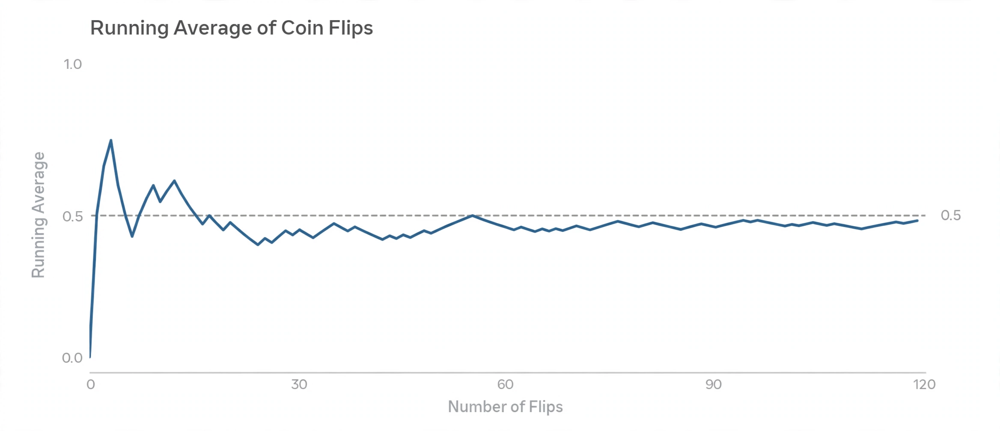

Law of large numbers

[Image: Graph of a running average of coin flips converging toward 0.5 as the number of flips grows]
The law of large numbers is a theorem of probability theory stating that the average of results from a large number of independent trials will be close to the expected value, and tends to become closer as more trials are performed.
It underlies the practical meaning of probability: a fair coin lands heads half the time in the long run, and insurers, casinos and pollsters all rely on large samples behaving predictably even though individual outcomes are random.
Weak and strong laws
The weak law, proved in basic form by Jacob Bernoulli in his Ars Conjectandi (1713), says the sample average converges in probability to the expected value. The strong law, completed in the 20th century by Andrey Kolmogorov and others, says the average converges with probability one.
The law is often confused with the 'law of averages' or gambler's fallacy — the mistaken belief that a run of heads makes tails 'due'. Past independent trials do not change future probabilities; convergence happens by dilution, not compensation.